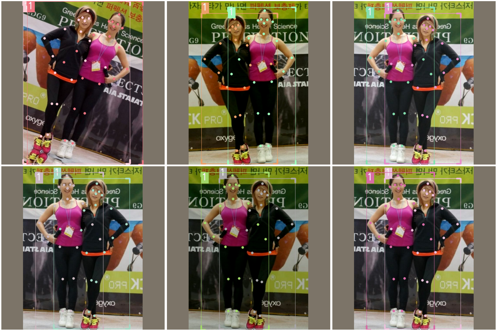
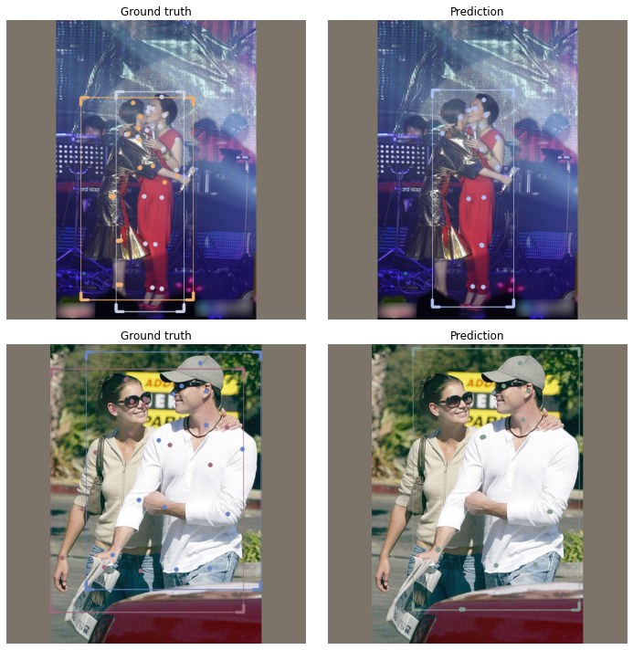
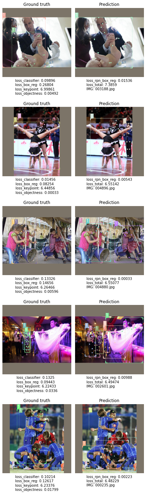

OCHuman dataset
From the OCHuman repo:
This dataset focus on heavily occluded human with comprehensive annotations including bounding-box, humans pose and instance mask. This dataset contains 13360 elaborately annotated human instances within 5081 images. With average 0.573 MaxIoU of each person, OCHuman is the most complex and challenging dataset related to human. Through this dataset, we want to emphasize occlusion as a challenging problem for researchers to study.
Installing IceVision
!pip install git+git://github.com/airctic/icevision.git#egg=icevision[all] --upgrade -q
!pip install git+git://github.com/airctic/icedata.git -q
from google.colab import drive
drive.mount('/content/gdrive')
Defining OCHuman parser
from icevision.all import *
_ = icedata.ochuman.load_data()
[1m[1mINFO [0m[1m[0m - [1m
MANUALLY download AND unzip the dataset from https://cg.cs.tsinghua.edu.cn/dataset/form.html?dataset=ochuman.
You will need the path to the `ochuman.json` annotations file and the `images` directory.
[0m | [36micedata.datasets.ochuman.data[0m:[36mload_data[0m:[36m11[0m
Parse data
parser = icedata.ochuman.parser("../OCHuman/ochuman.json", "../OCHuman/images/images/")
train_records, valid_records = parser.parse(data_splitter=RandomSplitter([0.8, 0.2]),
cache_filepath="../OCHuman/ochuman.pkl")
len(train_records), len(valid_records)
train_records[0]
0%| | 0/5081 [00:00<?, ?it/s]
[1m[1mINFO [0m[1m[0m - [1m[34m[1mAutofixing records[0m[1m[34m[0m[1m[0m | [36micevision.parsers.parser[0m:[36mparse[0m:[36m132[0m
(4064, 1017)
Record:
- Image ID: 4306
- Image size (width, height): (1000, 721)
- Filepath: ../OCHuman/images/images/003909.jpg
- BBoxes: [<BBox (xmin:820, ymin:49, xmax:998, ymax:713)>, <BBox (xmin:829, ymin:4, xmax:988, ymax:608)>]
- KeyPoints: [<KeyPoints (11 visible keypoints)>, <KeyPoints (17 visible keypoints)>]
- Labels: [1, 1]
Datasets + augmentations
presize = 1024
size = 512
valid_tfms = tfms.A.Adapter([*tfms.A.resize_and_pad(size), tfms.A.Normalize()])
train_tfms = tfms.A.Adapter([*tfms.A.aug_tfms(size=size, presize=presize, crop_fn=None), tfms.A.Normalize()])
train_ds = Dataset(train_records, train_tfms)
valid_ds = Dataset(valid_records, valid_tfms)
samples = [train_ds[1] for _ in range(6)]
show_samples(samples, ncols=3)

len(train_ds), len(valid_ds)
(4064, 1017)
Dataloaders
train_dl = keypoint_rcnn.train_dl(train_ds, batch_size=16, num_workers=4, shuffle=True)
valid_dl = keypoint_rcnn.valid_dl(train_ds, batch_size=16, num_workers=4, shuffle=False)
Model
model = keypoint_rcnn.model(num_keypoints=19)
Train a fastai learner
from fastai.callback.tracker import SaveModelCallback
learn = keypoint_rcnn.fastai.learner(dls=[train_dl, valid_dl], model=model, cbs=[SaveModelCallback()])
learn.freeze()
learn.lr_find()
SuggestedLRs(lr_min=0.00020892962347716094, lr_steep=0.0002290867705596611)

learn.freeze()
learn.fit_one_cycle(5, slice(2e-4), pct_start=0.99)
| epoch | train_loss | valid_loss | time |
|---|---|---|---|
| 0 | 5.161397 | 4.942918 | 08:53 |
| 1 | 4.726882 | 4.636247 | 08:33 |
| 2 | 4.584739 | 4.549319 | 08:34 |
| 3 | 4.538661 | 4.479443 | 08:34 |
| 4 | 4.489905 | 4.405727 | 08:28 |
learn.unfreeze()
learn.lr_find()
Better model found at epoch 0 with valid_loss value: 4.942918300628662.
Better model found at epoch 1 with valid_loss value: 4.636247158050537.
Better model found at epoch 2 with valid_loss value: 4.549318790435791.
Better model found at epoch 3 with valid_loss value: 4.479443073272705.
Better model found at epoch 4 with valid_loss value: 4.405727386474609.
/home/ec2-user/anaconda3/envs/python3/lib/python3.6/site-packages/fastai/learner.py:54: UserWarning: Saved filed doesn't contain an optimizer state.
elif with_opt: warn("Saved filed doesn't contain an optimizer state.")
SuggestedLRs(lr_min=1.9054606673307718e-05, lr_steep=7.585775847473997e-07)

learn.unfreeze()
base_lr = 3e-5
learn.fit_one_cycle(20, slice(base_lr/100, base_lr), pct_start=0.3, div=5.0)
| epoch | train_loss | valid_loss | time |
|---|---|---|---|
| 0 | 4.281294 | 4.280225 | 09:46 |
| 1 | 4.260938 | 4.245230 | 09:47 |
| 2 | 4.205652 | 4.205603 | 09:54 |
| 3 | 4.187217 | 4.184843 | 09:54 |
| 4 | 4.181470 | 4.144880 | 09:58 |
| 5 | 4.144985 | 4.128638 | 09:47 |
| 6 | 4.122699 | 4.091643 | 09:47 |
| 7 | 4.102231 | 4.076291 | 09:46 |
| 8 | 4.052161 | 4.054412 | 09:45 |
| 9 | 4.051751 | 4.025484 | 09:43 |
| 10 | 4.030755 | 4.010231 | 09:46 |
| 11 | 4.013452 | 3.995036 | 09:48 |
| 12 | 3.990907 | 3.981723 | 09:45 |
| 13 | 3.971456 | 3.970602 | 09:43 |
| 14 | 3.957092 | 3.958838 | 09:48 |
| 15 | 3.945086 | 3.938980 | 09:43 |
| 16 | 3.963209 | 3.947997 | 09:44 |
| 17 | 3.953434 | 3.936984 | 09:45 |
| 18 | 3.929243 | 3.939439 | 09:44 |
| 19 | 3.915179 | 3.932046 | 09:44 |
learn.recorder.plot_loss()
Better model found at epoch 0 with valid_loss value: 4.280224800109863.
Better model found at epoch 1 with valid_loss value: 4.245229721069336.
Better model found at epoch 2 with valid_loss value: 4.205602645874023.
Better model found at epoch 3 with valid_loss value: 4.184842586517334.
Better model found at epoch 4 with valid_loss value: 4.1448798179626465.
Better model found at epoch 5 with valid_loss value: 4.128637790679932.
Better model found at epoch 6 with valid_loss value: 4.091643333435059.
Better model found at epoch 7 with valid_loss value: 4.076290607452393.
Better model found at epoch 8 with valid_loss value: 4.054412364959717.
Better model found at epoch 9 with valid_loss value: 4.02548360824585.
Better model found at epoch 10 with valid_loss value: 4.010230541229248.
Better model found at epoch 11 with valid_loss value: 3.9950363636016846.
Better model found at epoch 12 with valid_loss value: 3.981722831726074.
Better model found at epoch 13 with valid_loss value: 3.9706015586853027.
Better model found at epoch 14 with valid_loss value: 3.9588377475738525.
Better model found at epoch 15 with valid_loss value: 3.9389796257019043.
Better model found at epoch 17 with valid_loss value: 3.936984062194824.
Better model found at epoch 19 with valid_loss value: 3.9320456981658936.

Show model results
keypoint_rcnn.show_results(model, valid_ds)

Save model
torch.save(model.state_dict(), "/content/gdrive/My Drive/icevision/OCHuman/model.pth")
model = keypoint_rcnn.model(num_keypoints=19)
state_dict = torch.load("/content/gdrive/My Drive/icevision/OCHuman/model.pth")
model.load_state_dict(state_dict)
<All keys matched successfully>
Running inference on validation set
infer_dl = keypoint_rcnn.infer_dl(valid_ds, batch_size=8)
samples, preds = keypoint_rcnn.predict_from_dl(model=model, infer_dl=infer_dl)
preds[1]
show_preds(samples=samples[68:70], preds=preds[68:70], show=True, display_label=False, figsize=(10, 10))
0%| | 0/128 [00:00<?, ?it/s]
{'labels': array([1, 1]),
'scores': array([0.9954145 , 0.87553155], dtype=float32),
'bboxes': [<BBox (xmin:135.16175842285156, ymin:90.47511291503906, xmax:388.1414794921875, ymax:455.3265380859375)>,
<BBox (xmin:239.25103759765625, ymin:62.99104309082031, xmax:374.84564208984375, ymax:493.66461181640625)>],
'above_threshold': tensor([ True, True, False], device='cuda:0'),
'keypoints': [<KeyPoints (19 visible keypoints)>,
<KeyPoints (19 visible keypoints)>],
'keypoints_scores': array([[4.7273316, 4.433237 , 2.8647 , 4.096078 , 3.5330942, 3.1904428,
2.2852895, 1.2644477, 1.880893 , 2.0137696, 0.9186574, 1.7884026,
9.4684725, 7.821962 , 8.573485 , 9.469735 , 7.5895596, 8.652597 ,
8.642918 ],
[5.2349987, 4.315785 , 2.9298844, 4.9465637, 3.5089214, 3.051835 ,
3.27213 , 2.6559322, 2.7692387, 4.543542 , 2.9491417, 2.4100673,
7.3162084, 5.801812 , 7.8256035, 8.6648445, 6.7377696, 8.427677 ,
7.8614326]], dtype=float32)}

plot_top_losses
model.train()
sorted_samples, sorted_preds, losses_stats = keypoint_rcnn.interp.plot_top_losses(model, valid_ds,
sort_by="loss_total")
[1m[1mINFO [0m[1m[0m - [1mLosses returned by model: ['loss_classifier', 'loss_box_reg', 'loss_objectness', 'loss_rpn_box_reg', 'loss_keypoint'][0m | [36micevision.models.interpretation[0m:[36mplot_top_losses[0m:[36m206[0m
0%| | 0/1017 [00:00<?, ?it/s]
0%| | 0/128 [00:00<?, ?it/s]
